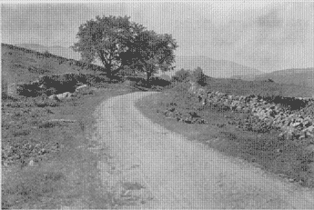

I lied in my introduction. Most (all) of these projects have little to nothing to do with actual web page designing efforts (sorry). Nontheless, if you are interested in what I have to say about 50-year-old albums and alternate-history scenarios regarding North American railroads with accompanied Google Earth projects, then by all means, have a gander at what follows below.
Album Review: The Good Rats (1969) -
The Good Rats
My album review of the Good Rats' 1969 self-titled debut album.
Links to a Google Doc page for now, since I haven't yet consolidated all of my writings into one centralized location.
Links to a Google Doc page for now, since I haven't yet consolidated all of my writings into one centralized location.
Album Review: Mediterranean Tales (1972) -
Triumvirat
My album review of the debut album by the 70s
German progressive rock band Triumvirat.
Links to a Google Doc page for now, since I haven't yet consolidated all of my writings into one centralized location.
Links to a Google Doc page for now, since I haven't yet consolidated all of my writings into one centralized location.
Album Review: Picturesque Matchstickable Messages From The Status Quo (1968) -
Status Quo
My album review of the groovily-psychedelic debut album from Status Quo.
Links to a Google Doc page for now, since I haven't yet consolidated all of my writ- ok, you get the point by now.
Links to a Google Doc page for now, since I haven't yet consolidated all of my writ- ok, you get the point by now.

Albany Post Road - Google Earth Presentation
The route of the original Albany Post Road plotted out in Google Earth.
Included infoboxes detail the history of the road and important locales associated with it, especially in regards to the road's impact and role in the Revolutionary War.
Included infoboxes detail the history of the road and important locales associated with it, especially in regards to the road's impact and role in the Revolutionary War.
Arizona Narrow Gauge Railroad (ANGRR) Alternate History Scenario -
Google Earth Project
A "what-if" scenario regarding the Arizona Narrow Gauge Railroad (later known as the Tuscon, Globe & Northwestern Railroad) - a proposed 3ft gauge railroad with bold ambitions that never got off the ground in the real world.
Still a WIP, this Google Earth project plots out the possible planned route according to the descriptions provided in the 1888 Prospectus document of the company following its first reorganization.
Still a WIP, this Google Earth project plots out the possible planned route according to the descriptions provided in the 1888 Prospectus document of the company following its first reorganization.